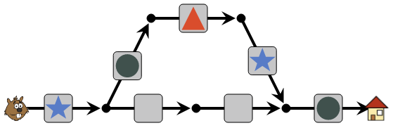
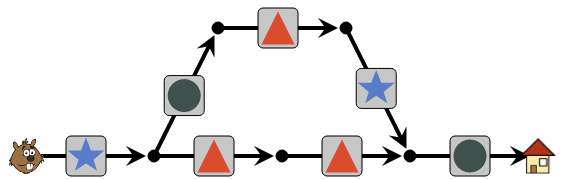
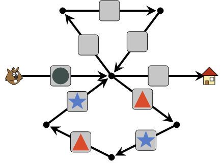
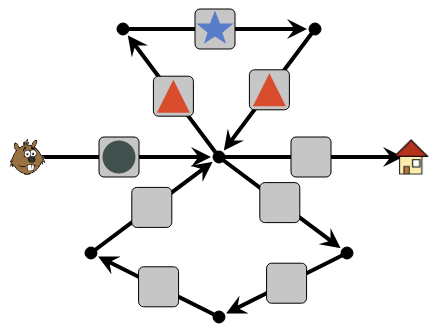
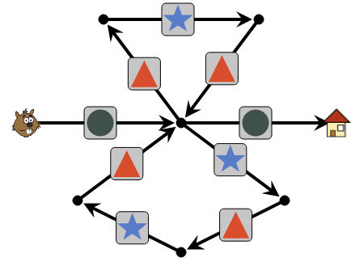
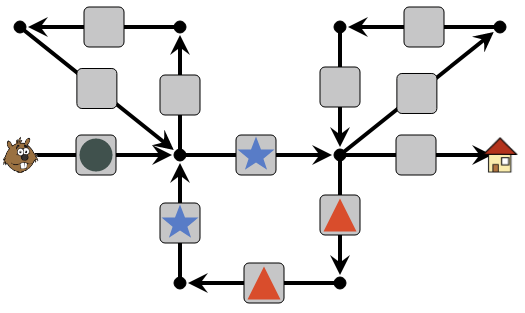
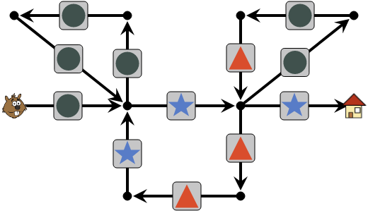

Aseta jokaiseen harmaaseen neliöön jokin kuvio klikkailemalla neliöitä.
Majava kulkee ohjelistan kuvioita vastaavista etenemisnuolista koostuvan reitin.
Tavoite on saada Majava saapumaan kotitaloonsa, kun hän on askeltanut ohjelistan mukaisen reitin loppuun asti.
Ohjelistassa on 5 kuviota, joten majavan pitää seurata yläkautta kiertävää reittiä, jossa on 5 askelta, eikä suoraa reittiä, jossa on vain 4 askelta. Näin ollen asettelemme ohjelistan kuviot järjestyksessä majavasta kotitaloon yläkautta kiertävälle reitille.
Yläkautta kiertävän reitin väliin jättämiin kahteen neliöön voi laittaa mitkä tahansa kuviot, kunhan niistä vasemmanpuoleinen ei ole ympyrä: muuten majava voisi harhautua kulkemaan toisella askeleellaan suoraan eteenpäin. Alla esitetyssä valmiissa ratkaisussa näihin kahteen neliöön on laitettu kolmiot.
Majavan reitin keskikohdasta lähtee kaksi "silmukkaa": toinen kiertää yläpuolella ja toinen alapuolella. Jos majava kulkisi ensin alasilmukkaa pitkin, päätyisi hän ohjelistan kuvioiden mukaan aloittamaan toisenkin alasilmukan kierroksen ja jäisi jumiin.
Näin ollen meidän on ohjattava majava ensin yläsilmukkaan:
Tämän jälkeen ainoa vaihtoehto on ohjata majava alasilmukkaan, koska on vielä liian aikaista kääntyä kotitaloa kohti. Voimme huomata, että nyt ohjelista ohjaa majavan kulkemaan ensin yläsilmukan, sitten alasilmukan, ja sitten vielä kerran yläsilmukan. Tämän jälkeen ohejlistassa on enää vain yksi kuvio jäljellä, ja se asetetaan kotitalon eteen. Ratkaisu on valmis:
Ohjelistassa on ensimmäisen ympyrän jälkeen kaksi kertaa jakso (tähti, kolmio, kolmio, tähti), sen jälkeen tähti, sen jälkeen kaksi kertaa jakso (ympyrä, ympyrä, kolmio), ja lopuksi tähti. Aloitetaan sijoittamalla ensimmäinen neljän kuvion jakso käymään neljän neliön muodostama alasilmukka. Ohjelista ohjaa majavan kulkemaan kyseisen alasilmukan kaksi kertaa, päätyen lopuksi silmukan oikeaan yläkulmaan.
Nyt ainoa mahdollisuus on ohjata majava käymään oikealla ylhäällä oleva kolmen neliön silmukka. Asetetaan siihen jälkimmäinen ohjelistassa havaitsemamme jakso. Ohjelista ohjaa majavan kulkemaan yläsilmukan kaksi kertaa. Sen jälkeen ohjelistassa on jäljellä enää tähti, ja asetamme sen kotitalon eteen. Ratkaisu on valmis:
Tehtävän taustalla piileskelee tietojenkäsittelyssä monien ongelmien analysointiin ja ratkaisemiseen käytetty tilakone (tai automaatti). Tilakone koostuu joukosta tiloja (tehtävässä nuolten päissä olevat kohdat: majava, reitin varren pallot ja kotitalo) sekä säännöistä, miten tilojen välillä siirrytään (tehtävässä nuolet ja neliöt, joihin piti asettaa kuviot). Tilakoneelle syötetään syötetta (tehtävässä majava lukee ohjelistaa) yksi symboli kerrallaan, ja tilakone "siirtyy" tämänhetkisestä tilasta siirtymäsääntöjen nyt luettua symbolia vastaavaan tilaan. Tilakone käyttäytyy siten varsin samantapaisesti kuin tehtävässä reittiä pitkin kulkeva majava.
Katso lisää esim. https://fi.wikipedia.org/wiki/Äärellinen_automaatti.